Receipts journal
All the receipts (deposits, debit orders into your Bank account, interest received, etc), which are deposited into a specific Bank account are entered in the Receipts journal for the Bank account in which the money is deposited.
The source documents used to enter transactions in a receipt batch are receipts and deposit slips and entries on the bank statement (e.g. bank interest received, etc.).
All receipts and moneys deposited will be displayed on the bank statement, and must be reconciled (usually on a monthly basis) with the Receipts journal. You may find other transactions, such as monies deposited directly into your Bank account, interest, etc. on your bank statement, which are usually dealt with when the bank reconciliation are done.
A copy of a receipt issued to a customer, debtor or other party from whom the money is received, is retained for record purposes, and should be included with the deposit slip. The original receipt is handed to the party from whom the money is received.
All the moneys received are deposited in the Bank account. A receipt should always be issued when cash is received. In some cases, cheques may be received instead. In these cases, receipts are not always issued, as cheques are listed on the deposit slip when the money is deposited into the Bank account.
Transactions in the Receipts journal can also be generated by the following options:
- Automatic receipts - Batch Processing option.
- Open item link - Debtor - select a transaction and right-click select the Receive Payment option on the context menu.
- Create receipts - Batch Processing option. When using this option, you may print the receipt, and the transaction for the receipt will automatically be inserted in the Receipts journal, in which case you do not have to write a hand-written receipt.
Process Transactions in the Receipts journal
To enter transactions in Receipt journals:
- On the Default ribbon, select Batch entry (F2).
- Select the Receipts Journal (linked to the correct Bank account) and click on the Open button.
|
|
If you have more than one Bank account, select the correct Receipts journal for the Bank account into which the moneys is deposited. |

|
|
If you have not yet set up the Receipts journal, or if your requirements should change, click on the F10: Setup icon. |

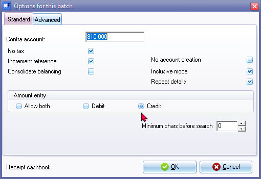
|
|
The contra account of the Bank account to which the Receipts journal is linked, will be displayed on the Batch type selection screen. You cannot change the contra account in the batch setup options for the Receipts journal. |
|
|
Note that for Receipts, the Amount entry field should be set to credit. |
- Enter the Alias (batch name) and press the Enter key.
- Capture the Deposit slips or Receipts. The following is an example of deposit slips obtained from a bank:
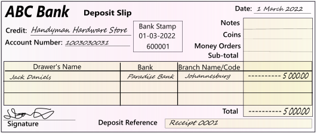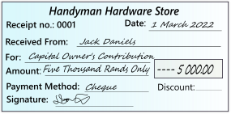
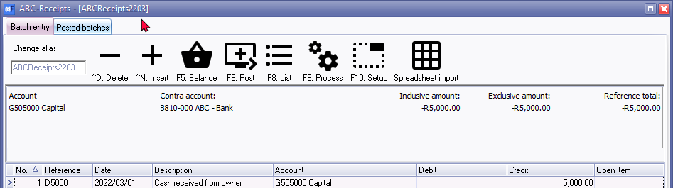
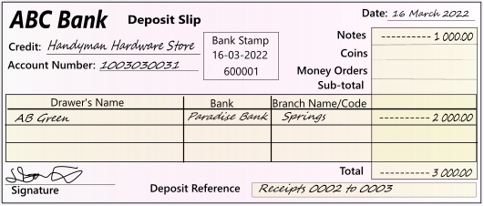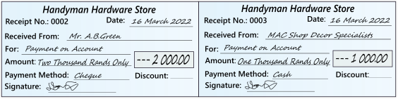
|
|
You may have pre-printed deposit slips, which may be pre-numbered and of a different appearance, but the information on the deposit slips is basically the same. |
- Enter and/or select the following:
- Reference - Enter the deposit number.
|
|
All the receipts on the same deposit slip must have the same reference number. If this is not done, bank reconciliation will be difficult, if not impossible. On the 16th of March, we have two receipts deposited on the last deposit slip. In this case, we use the same reference number (e.g. D5001) to enter both the deposit transactions on the same deposit slip. |
- Date - Enter or select the date of the deposit.
- Description - Enter a brief description for the transaction.
|
|
You need to enter a sensible description (e.g. "Payment Received - Thank you" in the description column, as this will appear on the debtor's statement and it must be useful information for the debtor. |
|
|
If you have many transactions with descriptions of a repetitive nature, you may assign a key on your keyboard as an abbreviation. For example, if you assign the R key on your keyboard for the description "Payment received - Thank you", you only need to press the R key and press the Enter key in the description field. The full description (e.g. "Payment received - Thank you") will be transferred to the description field. |

- Account - Select the Debtor or other applicable account to which you need to allocate the receipt.
- Tax - Select the applicable Output Tax account for the receipt, if applicable.
|
|
This is only applicable if Output VAT/GST/Sales Tax is allowed on a transaction, and if you are registered as a VAT/GST/Sales Tax Vendor. If no VAT/GST/Sales Tax is applicable to the transaction, select the "Empty" option as the "No Tax" code. |
|
|
You may also select to hide the Tax column, and lookup facility in the Setup Options for the Receipts journal, if no VAT/GST/Sales Tax is applicable to all transactions in this batch (e.g. only capturing Receipts from Debtors; or if you are not registered as a VAT/GST/Sales Tax Vendor. |
- Amount - Enter the amount of the transaction (Inclusive or Exclusive of VAT/GST/Sales Tax, if applicable).
|
Should you have any Open item Debtors, an Open item selection screen will appear, listing all debit transactions, as well as the outstanding balances of transactions for the debtor you have selected in the account field, if this Debtor account is created as an Open item Debtor. You need to select the specific invoice or transaction for which, you are receiving the payment. 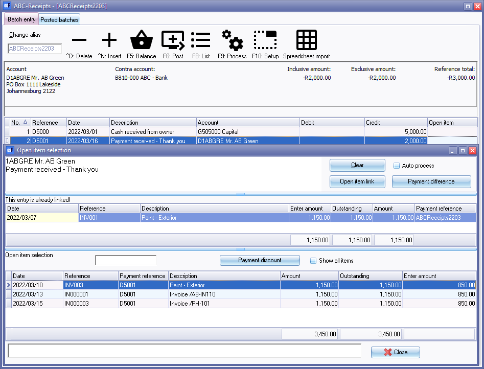 |
|
|
If you need to enter a debit transaction (i.e. early settlement discount allowed), you may enter a negative (minus sign), followed by the amount in the credit column. These amounts will be transferred to the debit column. |
|
|
You may select (tick) the “Not open item batch” field (F10:Setup - “Options for this batch” - Advanced tab) to de-activate the open item feature in batches. |
- After entering the Deposits in the Receipts journal, the transactions will be displayed as follows:
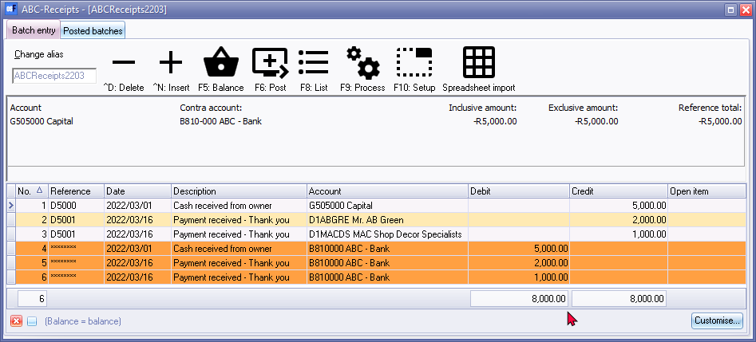
|
|
If you have selected a Tax code, in the Cashbook (Receipts journal), the amount EXCLUSIVE of VAT/GST/Sales Tax (NOT the INCLUSIVE of VAT/GST/Sales Tax) is reflected in the amount column, when the cursor is not on the amount field of a transaction. |
|
|
If a transaction for a debtor in the receipts journal is linked to an transaction on the Open item selection screen, the transaction will be displayed in a peach background colour. |
Finalising the Receipts batch
Once you have completed entering these receipts, and you are sure they are correct, you may proceed to finalise the batch. The recommended process, is as follows:
- Click on the F5:Balance icon. osFinancials will generate balancing entries to the Bank account (contra account) and to the Output VAT/GST/Sales Tax account, if a Tax code was selected for a transaction.
- Click on the F8:List icon to print a list of the transactions in the batch.
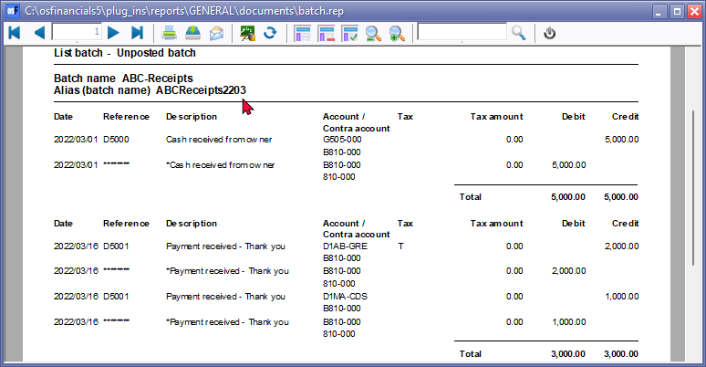
|
|
It is a good idea to list the batch, and check the entries on the batch thoroughly. If there are any errors, you may edit the batch, before posting the batch. |
- Press or click on the F6:Post icon, to post (update) the batch to the ledger.
|
|
It is not necessary to post (update) the transactions at the end of each day. You may add and/or post the transactions on a daily, or weekly basis, or at the end of a month. When you have entered a few transactions, you may close or exit the batch. The data will not be lost. |
T-Account view of transactions
After posting the transactions in the Receipts journal, the transactions should display as follows in the T-Account viewer:
All processed (posted) transactions will be accumulated in the Ledger analyser. There are various ways in which the transactions may be viewed, printed, exported and analysed.
To access the T-Account view of the transactions:
- On the Reports ribbon, select T-Account analyser 1.
- Select an account (e.g. B810-000 ABC - Bank) and double-click on it.
- Click on the following to get specific views of transactions:
- Batch number (e.g. 10014 automatically generated). This will list only the transactions for a specific batch (journal).
- Account code (e.g. G505-000 Capital account, B810-000 ABC - Bank, D000-005 Mr. AB Green, D000-006 MAC Shop Decor Specialists). This will list the transactions for a specific account.
- Date – This will list the transactions for a specific date. If you double-click on a date, the “From date” and “To date” will be changed to the selected date.
After posting the transactions in the Receipts journal, the transactions should display as follows in the T-Account viewer:
Batch view
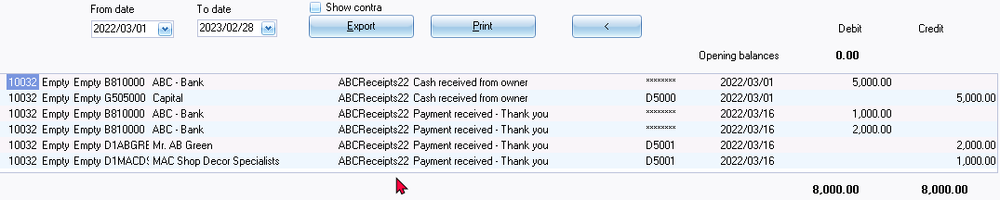
Account view
|
Accounts in the Debtor’s ledger:
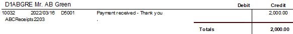
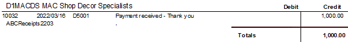 Accounts in the General ledger:
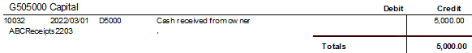
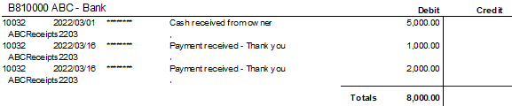
Debits = Credits Debit transactions in the General ledger (i.e. = Credit transactions in the General ledger (i.e. |